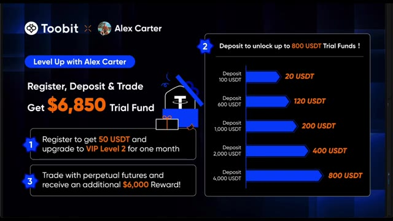
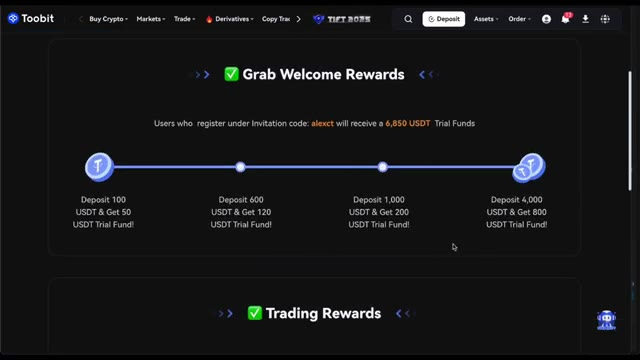
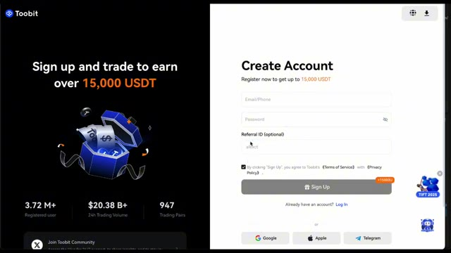
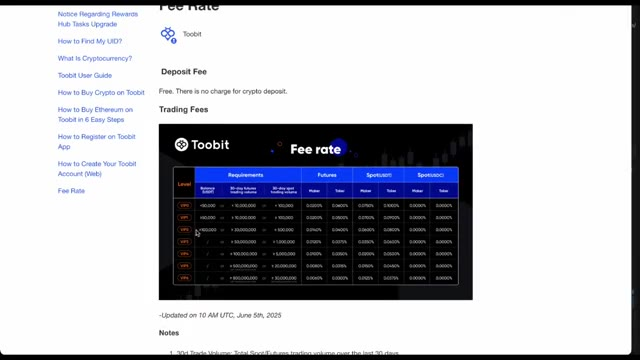
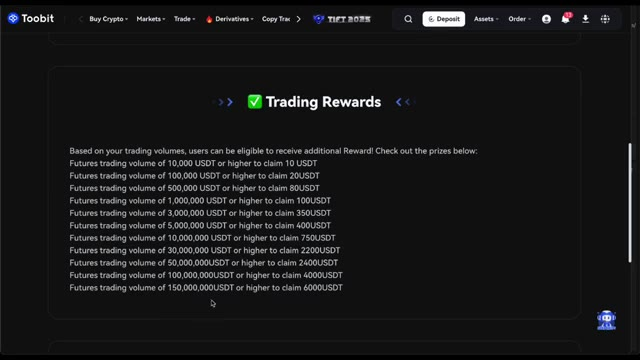
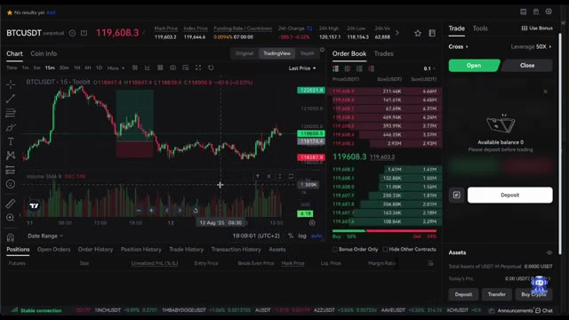
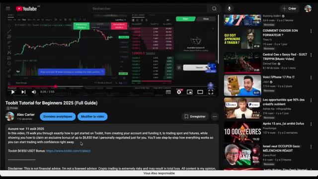
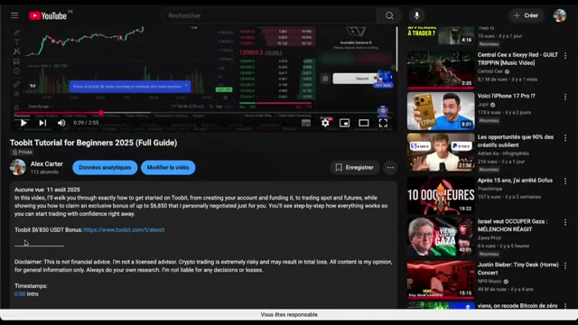

Aujourd'hui, j'ai un bonus exclusif que j'ai personnellement négocié avec 2Bit rien que pour vous. C'est une offre spéciale que vous ne trouverez nulle part ailleurs, quelque chose que j'ai organisé pour donner à mon audience un sérieux avantage pour commencer à trader. Avec cet accord, vous pouvez obtenir jusqu'à 6 850 USDT et des fonds d'essai, ce qui signifie que vous obtenez un gros pot d'argent virtuel pour trader sans aucun risque. En plus de cela, vous recevrez également des récompenses supplémentaires basées sur vos dépôts et votre activité de trading, donc cela vaut vraiment la peine d'être actif et régulier sur la plateforme. C'est super simple. Tout ce que vous avez à
Interface & Outils : Interface graphique promotionnelle / Échange de cryptomonnaies Toobit
Contenu textuel & Code : Texte affichant "Level Up with Alex Carter", "Register, Deposit & Trade Get $6,850 Trial Fund", avec trois paliers d'avantages : 1) Inscription (50 USDT + VIP Niveau 2), 2) Dépôt (jusqu'à 800 USDT de fonds d'essai selon le montant déposé : 100$, 600$, 1000$, 2000$, 4000$), 3) Trading sur contrats futures perpétuels (récompense additionnelle de 6 000$).
Action / Démonstration : Présentation visuelle de l'offre de parrainage et de bonus d'inscription pour l'audience.

🔍 Agrandirce qu'il faut faire, c'est s'inscrire, déposer des fonds, trader, et regarder comment vous débloquez tous ces superbes bonus. Et ne vous inquiétez pas, je vais vous guider à chaque étape du processus pour que vous ne ratiez absolument rien. N'oubliez pas non plus que le lien pour tout réclamer ainsi que tous les détails se trouvent juste en bas, dans la description sous cette vidéo. La première étape consiste à s'inscrire. Lorsque vous créez votre compte en utilisant mon code d'invitation AlexCT, vous obtenez immédiatement 50 USDT de fonds d'essai crédités sur votre compte. Cela signifie que dès le moment où vous vous inscrivez, vous pouvez commencer à vous entraîner et à trader
Interface & Outils : Échange de cryptomonnaies Toobit, interface YouTube.
Contenu textuel & Code : Paliers de bonus de dépôt de 100 à 4 000 USDT, code de parrainage "alexct".
Action / Démonstration : Présentation du processus d'inscription et des bonus de dépôt disponibles sur la plateforme.

🔍 Agrandir
🔍 Agrandiravec un petit coup de pouce sans risquer votre propre argent. Mais ce n'est pas tout. En utilisant mon code, votre compte sera également mis à niveau automatiquement au niveau VIP deux pendant un mois complet. Qu'est-ce que cela signifie ? Vous profitez de frais de trading plus bas immédiatement, sans conditions supplémentaires ni exigences compliquées. Cette mise à niveau à elle seule peut vous faire économiser une bonne somme d'argent, surtout si vous prévoyez de trader régulièrement. C' même si vous êtes complètement nouveau dans le trading de crypto et que vous ne savez pas par où commencer. Ensuite, plongeons dans les bonus de dépôt. Le concept est très simple.
Interface & Outils : Interface web de l'échange Toobit (page promotionnelle et grille tarifaire).
Contenu textuel & Code : Montants des bonus en USDT (50 USDT à l'inscription, 20 à 800 USDT selon les dépôts, jusqu'à 6 000 USDT de récompense futures) et tableau complet des taux de frais de trading par niveau VIP.
Action / Démonstration : Présentation visuelle des avantages promotionnels et des réductions de frais de trading offerts aux utilisateurs.

🔍 AgrandirPlus vous déposez, plus vous obtenez de fonds d'essai pour trader, ce qui vous offre une flexibilité et un pouvoir bien plus grands sans avoir besoin de risquer trop de vos propres capitaux. Par exemple, si vous déposez seulement 100 USDT, 2Bit ajoutera 20 USDT de fonds d'essai en bonus avec lesquels vous pourrez trader. Si vous voyez plus grand, disons un dépôt de 1 000 USDT, vous recevrez 200 USDT de fonds en bonus.
Interface & Outils : Page promotionnelle de l'échange Toobit.
Contenu textuel & Code : Tableau des paliers de bonus : un dépôt de 100 USDT donne 20 USDT de bonus, 600 USDT donne 120 USDT, 1 000 USDT donne 200 USDT, 2 000 USDT donne 400 USDT, et 4 000 USDT donne 800 USDT. Mention de 6 850 USDT de fonds d'essai au total.
Action / Démonstration : Présentation des offres de bonus et des paliers de dépôt sur la plateforme Toobit.
Et cela va jusqu'au niveau supérieur, où un dépôt de 4 000 USDT vous offrira l'incroyable somme de 800 USDT de fonds d'essai en bonus. Ce capital supplémentaire représente un énorme avantage lors du test de nouvelles stratégies ou du trading de positions plus importantes. Il vous permet d'expérimenter et d'apprendre sans mettre votre argent en danger. Parlons maintenant des récompenses de trading. Une fonction conçue pour continuer à vous récompenser à mesure que votre volume de trading augmente. Plus vous tradez de contrats à terme sur 2-bit, plus vous débloquez de récompenses en USDT. Par exemple, si votre volume de trading atteint 10 000 USDT, vous obtenez 10 USDT en
Interface & Outils : Plateforme d'échange de cryptomonnaies Toobit
Contenu textuel & Code : Tableau des bonus de dépôt (100 USDT = 20 USDT, jusqu'à 4 000 USDT = 800 USDT) et barème des récompenses de volume de trading futures.
Action / Démonstration : Présentation des avantages et des paliers de bonus offerts aux utilisateurs inscrits via le partenariat.
récompenses. Au fur et à mesure que vous gravissez les échelons, atteignant des volumes tels que 100 000, 500 000 et même jusqu'à 150 millions d'USDT, vos récompenses augmentent de manière significative, pour aller jusqu'à 6 000 USDT. C'est un système qui encourage l'activité et la régularité, en s'assurant que vos efforts de trading sont reconnus et récompensés. De plus, ces récompenses peuvent s'accumuler au fil du temps et vous aider à constituer votre capital plus rapidement. Une fois que vous avez débloqué vos bonus et préparé votre compte, vous pouvez commencer à trader immédiatement. Pas besoin d'attendre. Choisissez simplement votre marché préféré, décidez du montant que vous voulez
Interface & Outils : Site web / Échange de cryptomonnaies (Toobit)
Contenu textuel & Code : Tableau des paliers de volume de trading futures et récompenses en USDT : 10 000 USDT (10 USDT), 100 000 USDT (20 USDT), 500 000 USDT (80 USDT), jusqu'à 150 000 000 USDT (6 000 USDT).
Action / Démonstration : Présentation des conditions et des récompenses du programme de trading de la plateforme.

🔍 Agrandirpour trader, et vous lancer directement. Vos fonds d'essai vous permettent de vous entraîner à différentes stratégies de trading, d'essayer de nouvelles configurations et de trader exactement comme avec de l'argent réel, mais avec beaucoup moins de risque. C'est inestimable, surtout si vous débutez ou apprenez encore les ficelles. Si vous ne savez pas comment commencer ou si vous voulez un guide détaillé, j'ai déjà fait un tutoriel complet étape par étape sur la façon d'utiliser 2Bit, que vous pouvez trouver comme étant la vidéo précédente sur ma chaîne. Assurez-vous de la regarder. Elle explique tout, de l'inscription au placement de votre premier trade. Donc si vous voulez réclamer jusqu'à 6 850 USDT
Interface & Outils : Interface de la plateforme de trading Toobit et interface de la plateforme YouTube.
Contenu textuel & Code : Graphique de prix BTCUSDT avec indicateur Volume SMA 9, carnet d'ordres (Order Book), solde du compte et vignettes de vidéos YouTube.
Action / Démonstration : Visualisation d'un graphique de trading pour illustrer l'utilisation des fonds d'essai et l'entraînement sur une plateforme d'échange.

🔍 Agrandirde fonds d'essai et commencez à trader avec de précieux avantages VIP, assurez-vous de vous inscrire avec mon code AlexCT. Le lien est juste là, dans la description ci-dessous. Cliquez dessus, inscrivez-vous et commencez à trader dès aujourd'hui. Je vous retrouve sur la plateforme et j'ai hâte d'entendre parler de votre parcours de trader.
Interface & Outils : Navigateur web, plateforme d'échange Toobit, interface YouTube.
Contenu textuel & Code : URL de parrainage 'toobit.com/t/alexct', code de parrainage 'alexct', bonus de 15 000 USDT, graphique de trading BTCUSDT.
Action / Démonstration : Présentation de la procédure d'inscription sur l'exchange avec le code de parrainage et visualisation du tutoriel vidéo sur YouTube.

🔍 Agrandir
🔍 Agrandir